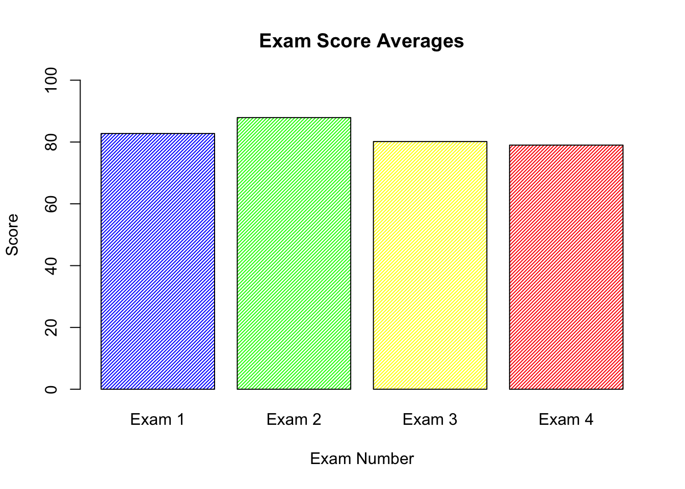
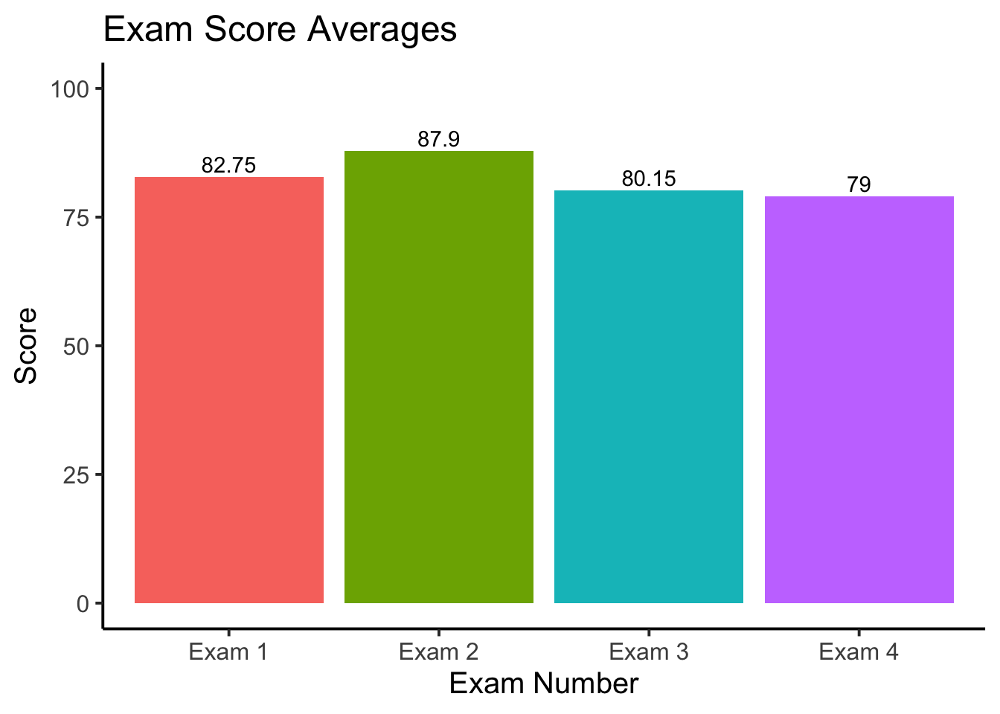
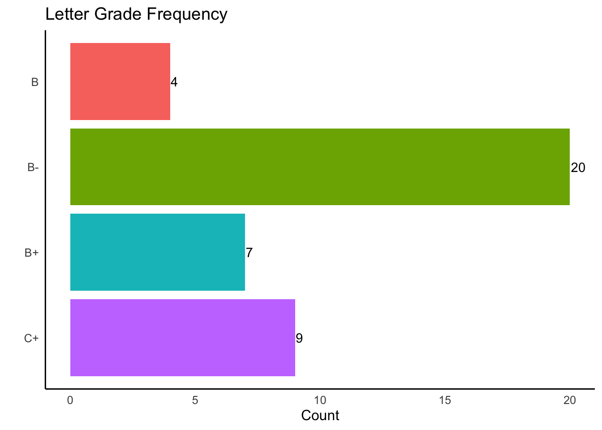
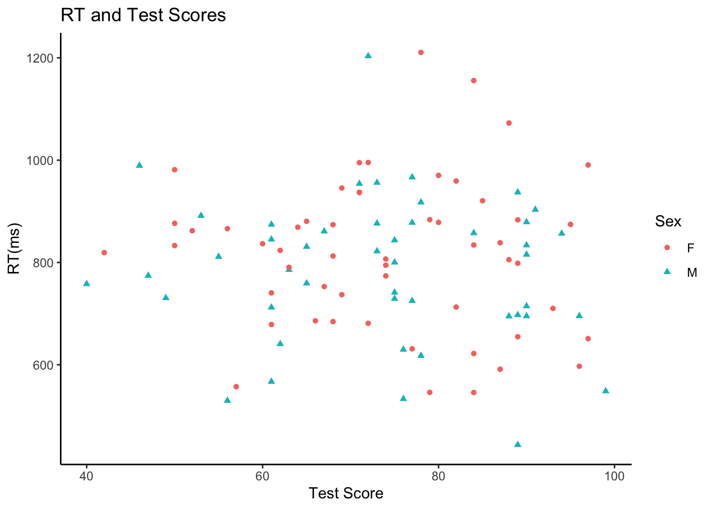
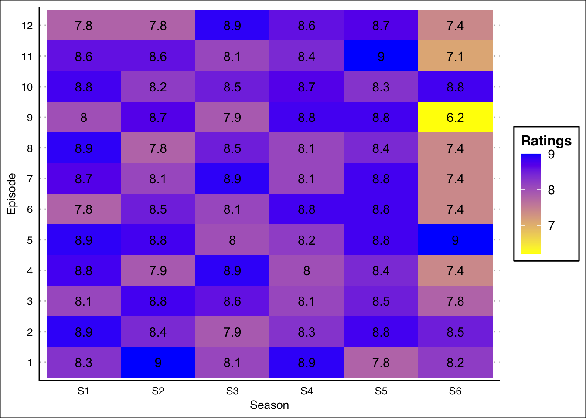
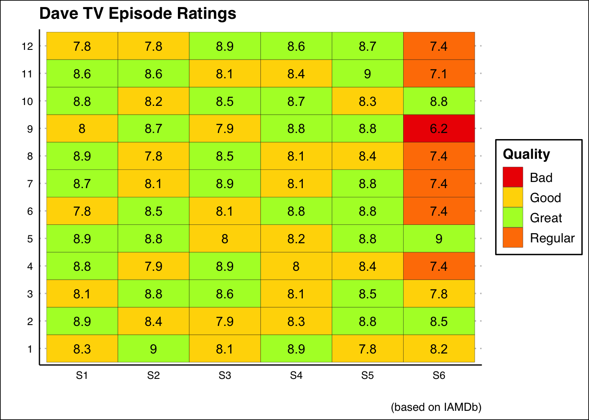

ggplot2When I first started out with R I only ever used the base plotting system. This was primarily because once I saw an example of a plot made with ggplot I was a little bit scared.
After awhile I realized that ggplot was the way to go when it came to graphics. The goal of this is to hopefully assuage you to do the same!
First, we will generate some data. I teach so we will use students and scores on a test and then look at how the students performed.
Some of my colleagues use a simple 4 test grading scheme where each test is worth 25%. Let’s create a sample dataset with a class of 40 students and varying scores for each student as well as an average for each student.
test_data <- data.frame(
Exam_1=round(runif(40,80,85)),
Exam_2=round(runif(40,75,100)),
Exam_3=round(runif(40,70,90)),
Exam_4=round(runif(40,60,100)))
test_data$FinalGrade <- rowMeans(test_data)
head(test_data) Exam_1 Exam_2 Exam_3 Exam_4 FinalGrade
1 84 93 75 78 82.50
2 85 98 83 92 89.50
3 81 82 77 91 82.75
4 82 85 78 97 85.50
5 81 83 83 72 79.75
6 81 91 90 88 87.50Let’s make a barplot of the average score on each exam using the base plotting system.
# Get the means of each column (exam)
test_means <- colMeans(test_data)
# Only use the first four exams
test_means <- test_means[1:4]
Exam_1m=mean(test_data$Exam_1)
Exam_2m=mean(test_data$Exam_2)
barplot(c(test_means),
names.arg = c("Exam 1","Exam 2","Exam 3","Exam 4"),
col=c("blue","green","yellow","red"),
density = 40,
ylim = c(0,100),
xlab="Exam Number",
ylab="Score",
main="Exam Score Averages")
This does not look too bad, but we could probably do much better with ggplot.
The first thing to note is the syntax that ggplot uses.
ggplot(data,aes(x,y)) + geom_() + labs() + theme_classic() + theme()
You will see here that each line is followed by a + which indicates that a new layer is being added. Let’s try this out using our dataframe. I will do it the way you will see it most places, and then afterwards only do it the shortened way:
# Use the means we created before and add two line numbers
gg_test <- data.frame(ExamNum=c("Exam 1","Exam 2","Exam 3","Exam 4"),
averages = test_means)
# x-axis will be the test number, y will be the average
# The color will change based on value of the ExamNum
ggplot(data=gg_test,aes(x=ExamNum,y=averages,fill=ExamNum))+
# Tells R to plot the value associated with the x-axis
geom_bar(stat="identity")+
# A nice theme
theme_classic(base_size=15)+
# Specifies x and y axes and title for plot
labs(x="Exam Number",y="Score",
title="Exam Score Averages") +
# Removes legend
theme(legend.position = "none")+
# Specify limits
ylim(0,100) +
# Adds values from the averages vector and vertically adjusts
geom_text(aes(label=averages,
vjust=-.3))
I know that there is a lot going on in the example, but it just kind of looks nice, right?
Let’s go back to the example and add some filtering. Let’s make a new column that determines whether or not a student passess or fails the test.
When we first made the dataset we included a fifth column, FinalGrade that represents the students overall grade. We will then make a series of statements that will determine what the letter grade is, and then plot the result!
We will be using the %>% or pipe operator to pass the contents of test_data into our arranging.
We will first use the mutate function which creates a new column based on the arguments you pass to it.
We will also be using case_when which acts as an ifelse statement but with multiple conditionals.
case_when(variable=this~make it this)test_data %>%
mutate(LetterGrade=case_when(
FinalGrade>=95~"A",
FinalGrade>=90~"A-",
FinalGrade>=87~"B+",
FinalGrade>=84~"B",
FinalGrade>=80~"B-",
FinalGrade>=74~"C+",
FinalGrade>=70~"C",
FinalGrade>=67~"D+",
FinalGrade>=64~"D",
FinalGrade>=60~"D-",
FinalGrade<60~"F")) Exam_1 Exam_2 Exam_3 Exam_4 FinalGrade LetterGrade
1 84 93 75 78 82.50 B-
2 85 98 83 92 89.50 B+
3 81 82 77 91 82.75 B-
4 82 85 78 97 85.50 B
5 81 83 83 72 79.75 C+
6 81 91 90 88 87.50 B+
7 80 90 87 72 82.25 B-
8 84 87 81 75 81.75 B-
9 85 98 81 65 82.25 B-
10 84 98 86 81 87.25 B+
11 84 80 85 67 79.00 C+
12 82 93 77 65 79.25 C+
13 85 93 76 68 80.50 B-
14 84 95 88 68 83.75 B-
15 84 77 87 75 80.75 B-
16 81 87 75 84 81.75 B-
17 85 91 82 82 85.00 B
18 83 94 76 71 81.00 B-
19 85 84 89 72 82.50 B-
20 84 82 75 63 76.00 C+
21 80 75 84 88 81.75 B-
22 82 76 76 74 77.00 C+
23 81 95 82 94 88.00 B+
24 80 97 71 77 81.25 B-
25 81 83 77 80 80.25 B-
26 81 96 83 73 83.25 B-
27 82 94 83 87 86.50 B
28 84 78 71 83 79.00 C+
29 84 87 75 88 83.50 B-
30 80 83 82 90 83.75 B-
31 82 81 87 98 87.00 B+
32 85 76 86 79 81.50 B-
33 81 93 81 98 88.25 B+
34 83 83 72 62 75.00 C+
35 83 78 82 92 83.75 B-
36 84 94 78 80 84.00 B
37 83 91 90 85 87.25 B+
38 83 92 73 67 78.75 C+
39 83 88 71 68 77.50 C+
40 84 95 71 71 80.25 B-final_grade <- test_data %>%
mutate(LetterGrade=case_when(
FinalGrade>=95~"A",
FinalGrade>=90~"A-",
FinalGrade>=87~"B+",
FinalGrade>=84~"B",
FinalGrade>=80~"B-",
FinalGrade>=74~"C+",
FinalGrade>=70~"C",
FinalGrade>=67~"D+",
FinalGrade>=64~"D",
FinalGrade>=60~"D-",
FinalGrade<60~"F")) %>%
group_by(LetterGrade) %>%
count()
final_grade# A tibble: 4 x 2
# Groups: LetterGrade [4]
LetterGrade n
<chr> <int>
1 B 4
2 B- 20
3 B+ 7
4 C+ 9Our students didn’t do particularly well, but that is to be expected when we control the range their grades can be in!
Next, we will graph the data using ggplot, but this time we will pass the dataframe directly into the plot and remove the redundant x= and y=.
When we graph the results the letter grades will be backwards so we will need to use fct_rev to reverse them.
final_grade %>%
# Place Grades on X axis and count on Y axis
# Color based on Letter Grade
ggplot(aes(fct_rev(LetterGrade),n,fill=LetterGrade)) +
geom_bar(stat="identity") +
theme_classic(base_size=12) +
labs(x="",y="Count",
title="Letter Grade Frequency") +
# Flip the axes for better readability
coord_flip() +
# Remove the legend and the axis ticks
theme(legend.position ="none",
axis.ticks = element_blank()) +
# Add the count to the bars
geom_text(aes(label=n,
hjust=-.08))
I’m not entirely sure, but I think I’m just addicted to bar charts–but that’s my problem!
When I was first learning R in graduate school the class was given a task to plot points but in different colors depending on what gender the points came from. In base plotting this requires the use of not only the plot function but also the points function. It is entirely doable, but ggplot just handles it better!
Let’s generate some data where we have hypothetical participants take an experiment where their reaction time is measured as well as their mood is measured.
scat_df <- data.frame(
Sex=sample(c("M","F"),100,replace = T),
RT=round(rnorm(100,800,150),2),
TestScore=c(round(runif(50,60,100)),
round(runif(50,40,90)))
)
scat_df Sex RT TestScore
1 M 640.80 62
2 F 591.26 87
3 F 959.25 82
4 F 545.81 84
5 M 956.00 73
6 F 838.56 87
7 M 857.61 84
8 M 567.07 61
9 F 990.61 97
10 F 1155.52 84
11 F 883.38 89
12 M 903.22 91
13 M 759.32 65
14 F 883.67 79
15 F 936.61 71
16 M 695.41 96
17 F 1210.61 78
18 M 878.97 90
19 M 1203.46 72
20 F 937.37 71
21 M 845.14 61
22 M 856.71 94
23 F 836.70 60
24 F 597.19 96
25 F 798.53 89
26 M 694.95 88
27 F 710.25 93
28 M 877.88 77
29 F 920.64 85
30 F 1072.57 88
31 M 917.60 78
32 M 697.40 89
33 M 815.54 90
34 M 741.39 75
35 F 874.44 95
36 M 443.52 89
37 M 860.97 67
38 M 548.54 99
39 M 714.72 90
40 F 868.96 64
41 M 874.21 61
42 F 712.80 82
43 M 695.30 90
44 F 773.79 74
45 F 651.05 97
46 M 785.73 63
47 F 678.79 61
48 F 684.46 68
49 F 622.08 84
50 M 843.55 75
51 M 811.21 55
52 M 953.99 71
53 M 629.78 76
54 M 876.41 73
55 F 862.08 52
56 M 774.27 47
57 F 995.11 71
58 F 995.46 72
59 M 729.17 75
60 F 833.09 50
61 M 533.41 76
62 F 878.40 80
63 M 725.02 77
64 M 833.77 90
65 F 737.05 69
66 M 989.11 46
67 M 966.71 77
68 F 823.71 62
69 F 866.10 56
70 M 712.21 61
71 F 686.00 66
72 F 654.93 89
73 M 891.43 53
74 F 794.71 74
75 M 529.90 56
76 M 937.17 89
77 F 805.46 88
78 F 681.10 72
79 M 730.63 49
80 F 970.21 80
81 F 557.26 57
82 M 800.28 75
83 F 880.49 65
84 M 822.13 73
85 M 617.68 78
86 F 834.12 84
87 F 546.00 79
88 F 752.98 67
89 F 631.25 77
90 F 945.52 69
91 M 830.85 65
92 F 790.61 63
93 F 740.55 61
94 F 981.36 50
95 F 812.59 68
96 F 876.55 50
97 F 819.26 42
98 F 806.76 74
99 M 758.03 40
100 F 873.87 68Plot Sex against RT and have the colors be linked to the Sex of the participant (point).
scat_df %>%
ggplot(aes(TestScore,RT,color=Sex)) +
geom_point(aes(shape=Sex)) +
theme_classic() +
labs(x="Test Score",
y="RT(ms)",
title="RT and Test Scores")
Clearly no real pattern is emerging from the data, but we can see a clear distinction between the different points.
One of my favorite geom’s to use is geom_tile which creates a heatmap style plot.
Let’s create a fake TV show with fake episode titles and fake episode ratings.
Dave_TV <- data.frame(
Season=rep(paste0("S",1:6),each=12),
Episode=as.factor(rep(1:12)),
Title=str_to_title(paste0("The ",
sample(words,72),
" ",
sample(words,72))),
Ratings=c(round(runif(60,7.8,9),1),
round(runif(12,6,9),1)),
stringsAsFactors = F)
Dave_TV Season Episode Title Ratings
1 S1 1 The Of Else 8.3
2 S1 2 The Draw Thursday 8.9
3 S1 3 The Afternoon Friend 8.1
4 S1 4 The Grand Kitchen 8.8
5 S1 5 The All Trouble 8.9
6 S1 6 The Strong Show 7.8
7 S1 7 The Kill Hate 8.7
8 S1 8 The Fall Okay 8.9
9 S1 9 The After Industry 8.0
10 S1 10 The Normal Only 8.8
11 S1 11 The Actual Suggest 8.6
12 S1 12 The May Exact 7.8
13 S2 1 The Room Consider 9.0
14 S2 2 The Organize Then 8.4
15 S2 3 The District With 8.8
16 S2 4 The Call Indeed 7.9
17 S2 5 The Come Treat 8.8
18 S2 6 The Wednesday Wind 8.5
19 S2 7 The Dinner Five 8.1
20 S2 8 The Fact Report 7.8
21 S2 9 The About Spend 8.7
22 S2 10 The Thursday Green 8.2
23 S2 11 The Still Shoe 8.6
24 S2 12 The Long Apply 7.8
25 S3 1 The Thirty Scotland 8.1
26 S3 2 The Time Food 7.9
27 S3 3 The Great Drink 8.6
28 S3 4 The Bring Clock 8.9
29 S3 5 The Most Less 8.0
30 S3 6 The Today None 8.1
31 S3 7 The Instead Enjoy 8.9
32 S3 8 The Act Read 8.5
33 S3 9 The Thirteen Head 7.9
34 S3 10 The Break Excuse 8.5
35 S3 11 The Thing Brother 8.1
36 S3 12 The Blue Sheet 8.9
37 S4 1 The Train Reckon 8.9
38 S4 2 The Employ Without 8.3
39 S4 3 The Current Put 8.1
40 S4 4 The Awful He 8.0
41 S4 5 The City Early 8.2
42 S4 6 The Shoot Feel 8.8
43 S4 7 The Clothe Tuesday 8.1
44 S4 8 The Depend Dinner 8.1
45 S4 9 The Inside Half 8.8
46 S4 10 The No Apparent 8.7
47 S4 11 The Fun Tree 8.4
48 S4 12 The Shop Real 8.6
49 S5 1 The Front Educate 7.8
50 S5 2 The Age Class 8.8
51 S5 3 The Few Item 8.5
52 S5 4 The Identify Birth 8.4
53 S5 5 The Just Therefore 8.8
54 S5 6 The Obvious Pair 8.8
55 S5 7 The Tree Very 8.8
56 S5 8 The Clean Although 8.4
57 S5 9 The Home Buy 8.8
58 S5 10 The Particular Term 8.3
59 S5 11 The Bank Paragraph 9.0
60 S5 12 The Britain Strike 8.7
61 S6 1 The Hour Commit 8.2
62 S6 2 The Lad Fair 8.5
63 S6 3 The Along Accept 7.8
64 S6 4 The Note Last 7.4
65 S6 5 The Wish Hour 9.0
66 S6 6 The Improve Two 7.4
67 S6 7 The Out Fly 7.4
68 S6 8 The Value Such 7.4
69 S6 9 The Position Straight 6.2
70 S6 10 The Child Time 8.8
71 S6 11 The Can Might 7.1
72 S6 12 The Take Project 7.4Firstly, I want to take a moment to see how truly excellent some of the episode titles are:
title_samp <- sample(Dave_TV$Title,10)
title_samp [1] "The Organize Then" "The City Early" "The Dinner Five"
[4] "The Most Less" "The Along Accept" "The Blue Sheet"
[7] "The Strong Show" "The Out Fly" "The Inside Half"
[10] "The Great Drink" Anyways, now that our data is in the correct format we can plot it.
Dave_TV %>%
ggplot(aes(Season,Episode,fill=Ratings)) +
geom_tile(size=1) +
theme_clean() +
geom_text(aes(label=Ratings)) +
theme(axis.ticks = element_blank())+
scale_fill_gradient(low="yellow",high="blue")
There could be an entirely separate tutorial on just color choices in ggplot2.
Here is one last iteration that uses conditional values to color each episode or tile.
cols=c("Bad"="red2",
"Garbage" ="dodgerblue2",
"Great" ="greenyellow",
"Regular"="darkorange1",
"Good" ="gold1")
Dave_TV %>%
mutate(Quality=case_when(
Ratings<5.0 ~ "Garbage",
Ratings<6.5 ~ "Bad",
Ratings<7.5 ~ "Regular",
Ratings<8.5 ~ "Good",
Ratings<10 ~ "Great")) %>%
ggplot(aes(Season,Episode,fill=Quality)) +
geom_tile(color="black",size=.085) +
theme_clean() +
geom_text(aes(label=Ratings)) +
theme(axis.ticks = element_blank()) +
scale_fill_manual(values=cols) +
labs(x="",y="",
title="Dave TV Episode Ratings",
caption="(based on IAMDb)")
So there you have it, a very brief introduction to ggplot. As my own projects expand, I will include new sections or add more examples here.
Copyright © 2019 David Brocker All rights reserved.